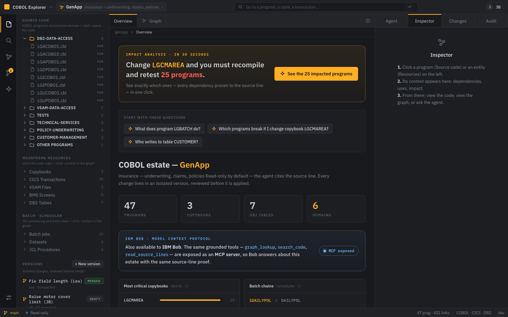
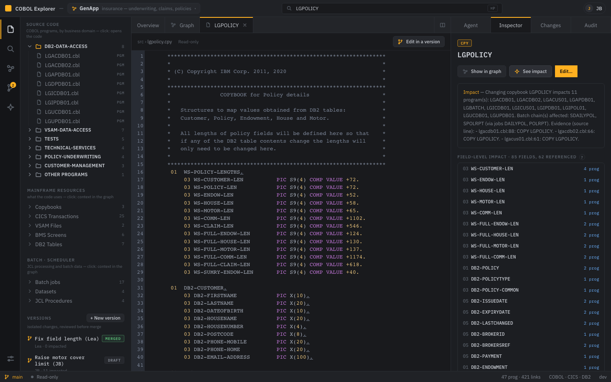
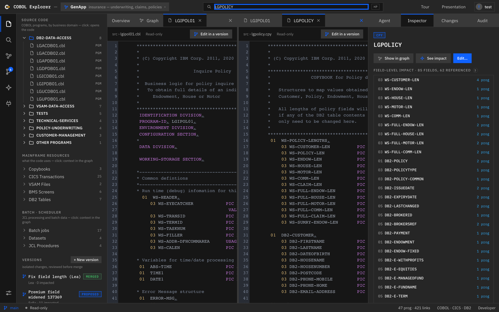
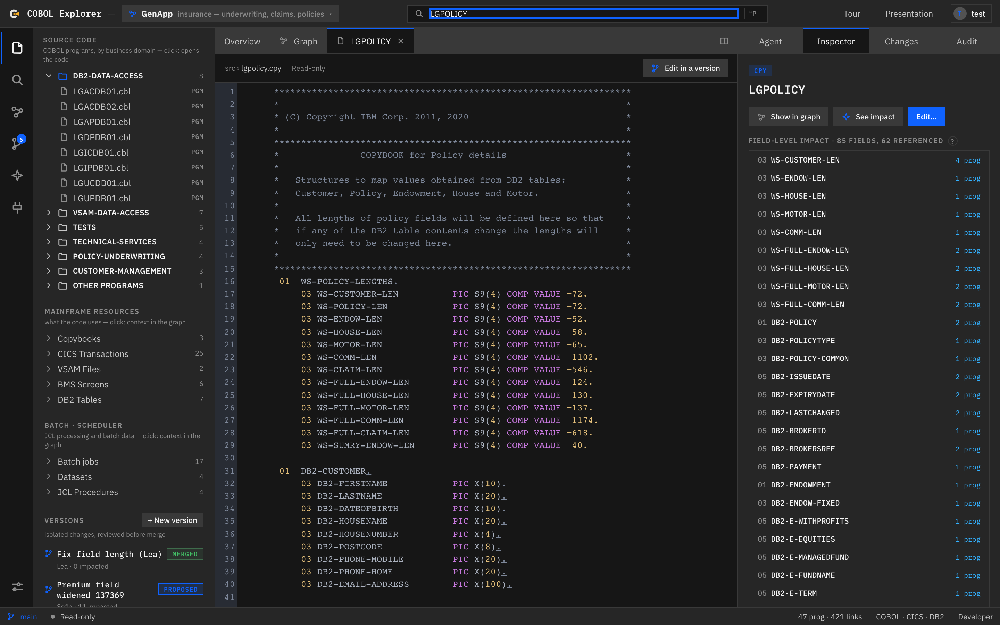
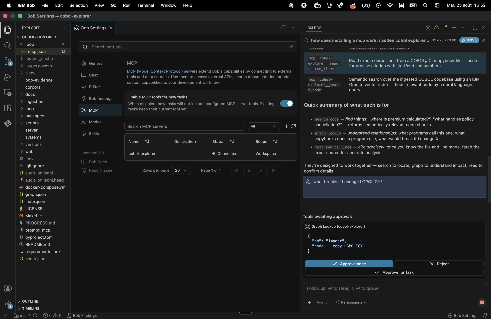
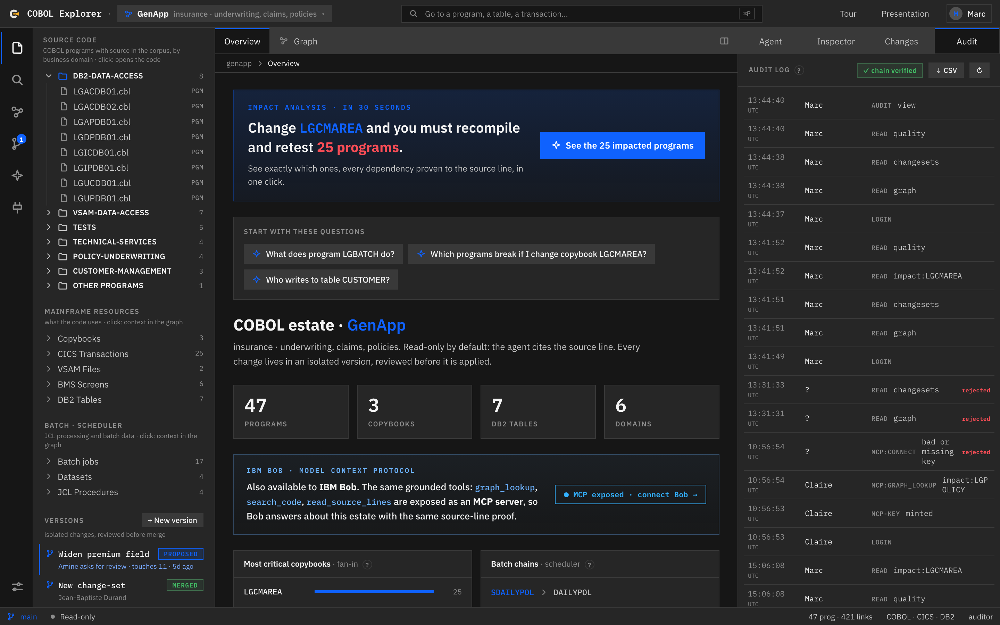

COBOL Explorer IBM AI Builders Challenge - Wildcard submission01 / 20
← → or scroll
01 Agentic AI co-worker · mainframe estates
COBOL Explorer
Understand and govern 60 years of COBOL, with an AI agent
traceable down to the line of code - for developers and for risk & compliance teams.
IBM GraniteGranite EmbeddingsBeeAIMCP → IBM BobNeo4jpgvector
COBOL Explorer - IBM AI Builders Challenge with IBM Bobdemo estates: GenApp (insurance) · CardDemo (credit cards)
02 The problem
Billions of lines of COBOL, and no one left to read them.
The experts are retiring
Knowledge leaves the company faster than it is passed on. The last person who knew why retired last year.
No reliable documentation
The only trustworthy specification is the code itself - and it runs to millions of lines.
Fear of touching anything
A copybook shared by 25 programs: changing one field without knowing the blast radius is a production incident.
Regulators demand proof
EU DORA and national banking regulators: you must prove which rule applies, where it lives in the code, and who touched it.
Generic AI assistants answer - but without proof. On a bank's or an insurer's
estate, a plausible-but-wrong answer is worse than no answer at all.
COBOL Explorer02 / 20
03 The answer
A VS Code-style workshop that speaks to devs and to the business.
47
COBOL programs
421
Dependency links
25
CICS transactions
6
Business domains
Estate explorer
Programs grouped by business domain (underwriting, claims…), CICS/VSAM/BMS/DB2 resources, versions. ⌘P palette: fuzzy navigation + Granite semantic search.
Traceable agent
A chat that answers by citing file:line - every citation is clickable, opens the code and highlights the line. Tool trace streamed live (SSE).
Living graph
339 layered nodes (scheduler → jobs → transactions → programs → data). Neighbourhood focus, impact radius, and the graph lights up while the agent reasons.
Tabbed editor with split view (program on the left, its copybook on the right), dependency inspector,
version panel, audit log. All in a single web console.
COBOL Explorer03 / 20
04 Wildcard - Build Intelligent Systems for the Future of Work
Disconnected tasks → one governed system.
The Wildcard asks for intelligent systems that reduce repetitive work, improve decisions and help teams
reach outcomes faster. Maintaining a mainframe estate is exactly the work that never got that treatment - so we
mapped the product onto the four verbs.
Plan
Exhaustive impact. “Changing this copybook breaks these 11 programs
and these 2 batch chains” - a deterministic traversal, not a plausible sample. The blast radius stops being a guess.
Coordinate
Team versioning. Isolated branches, the owners actually affected,
review, conflict resolution - risk, compliance and developers work on the same object without stepping on each other.
Decide
Grounded answers. Every fact cited to file:line and
re-verified before it reaches the screen. Decision support that a regulator can follow.
Execute
Governed merge. Propose → measure → approve → merge, with an HMAC-chained
audit trail. The AI proposes; the team decides; the log proves it.
Who this is for - not only COBOL developers. The people who
carry the risk of a change and cannot read the code (risk, compliance, audit) get the same grounded answers, in
their own language, from the same estate. That is the “future of work” part: the system spans roles, not just tools.
COBOL Explorer04 / 20
05 Real product screenshot
The workshop, for real.
Estate overview - stats, critical copybooks by fan-in (LGCMAREA ×25), scheduler batch chains,
a “Quality” card (0 orphans · 11 dead copybooks), starter questions. On the right: Agent · Inspector · Changes · Audit.
COBOL Explorer05 / 20
06 The founding principle
Understanding ≠Changing.
read-only
🔎 Understand
Browse, ask, analyse - without ever altering the estate.
The agent reads the code, walks the graph and cites the source line for every claim.
Zero side effects, by construction.
think “where is the premium computed?” search_code → MAJORER-PRIME lgipol01.cbl:50 ✓ sources verified
isolated version
✍️ Change
Every change lives in a real git branch (one commit per edit,
a real git diff). Impact computed first, team review, then the merge gate:
nothing reaches the estate without an explicit confirmation.
3 of these tools are also exposed over MCP to IBM Bob07 / 20
08 Complementarity · MCP → IBM Bob
Bob reads the code. MCP hands it the estate already computed.
IBM Bob
an excellent code reader - grep, open, follow a CALL
Bob reads and reasons over code very well already. COBOL Explorer does not replace that: it hands Bob, over MCP, an estate that has already been computed (symbol table + call graph + data lineage). Bob no longer has to re-derive everything on every question, and it gains what lives in no file it could read.
The question where the graph earns its keep
“I change WS-RATE in copybook LGPOLICY. List exhaustively every impacted program and every batch chain, with proof.” - an exhaustive, deterministic answer, scheduler chains included.
🤖 What Bob already does - very well
an agent that reads and reasons, like a senior developer
✓reads, greps, opens, follows a CALL / a COPY on demand
✓understands COBOL and reasons about what it reads
✓orchestrates: it decides when to call the tool
🕸 What MCP adds on top
graph_lookup · computed once, offline, served to Bob
✓ the exhaustive transitive closure, pre-computed - instead of re-deriving it token by token on every prompt
✓ the scheduler chains, which live in no readable file (they come from the scheduler export) - joined into the graph
✓ the file:line citation, systematic and deterministic every time
The LSP analogy - an IDE gives developers “go-to-definition / find-references / call-hierarchy” through an LSP. Not because they cannot read: because re-deriving those links by hand is expensive. COBOL Explorer plays that role for Bob - cross-language (COBOL + JCL + DB2 + scheduler), across the whole estate.
Honestly: read_source_lines overlaps with what Bob already does - its value is being the citation leg of graph_lookup. MCP earns its place where plain reading has to rebuild everything: the exhaustive closure and the out-of-code relationships, at real scale.
3 tools exposed over MCP to IBM Bob: graph_lookup · search_code · read_source_lines08 / 20
Deterministic traversal - no LLM in the loop, built by parsing the code
Impact (what does a change break?), data lineage, call chains, functional profile
Every edge carries its evidence: the line number of the COPY / CALL / EXEC SQL
Automatic in-process NetworkX fallback if the database goes down
“Which programs break if I change LGPOLICY?”
→ 11 programs (LGACDB01 L.88, LGIPOL01 L.55…),
→ jobs DAILYPOL·POLRPT → chains SDAILYPOL·SPOLRPT
SELF-HOSTED
◎ Vector RAG - pgvector
semantic, by intent · PostgreSQL + HNSW cosine
IBM Granite embeddings (granite-embedding:278m, 768 dimensions)
Find things when you don't know the name: concepts, intent, business language
HNSW index inside PostgreSQL - the path to scale (millions of chunks)
Wired into the agent, the ⌘P palette and the MCP server
“Where is the logging?” (no name known)
→ LGSTSQ0.64 · LGWEBST5 0.55 · LGSETUP 0.55
Hybridvague question → search_code (find the program)
→ graph_lookup (structure it: impact, dependencies) → cited answer- the LLM routes, and the think step logs why.
Question
RAG chosen
Why
“Who uses LGPOLICY?” / “what breaks?”
Graph
exact, exhaustive answer, proven line by line
“Where is the premium computed?” (name unknown)
Vector
semantic similarity over the code itself
“What does the underwriting program do?”
Hybrid
vector to find it, graph to profile it
docker compose up -d · make serve-scale09 / 20
10 The reasoning path, for real
Every answer arrives with its reasoning.
A real product trace (SSE streaming, event by event) - the question:
“What does LGIPOL01 do, and which programs are impacted by LGPOLICY?”
event: start event: trace 💭 think → “LGIPOL01 is likely a key component of policy handling; . I search semantically first, then profile it through the graph” event: trace search_code(query=policy inquiry) → 5 results lgipol01.cbl event: trace graph_lookup(op=summary, node=LGIPOL01) → profile: 2 copybooks · 2 calls · 4 transactions event: trace graph_lookup(op=impact, node=LGPOLICY) → 11 programs, 2 batch chains event: answer Markdown answer: business function + 11 programs with their line (LGACDB01 L.88…) event:verify ✓ every file:line citation re-checked against the corpus event: done
While the query runs
The graph greys out, then the entities the RAG touches
light up one by one with an amber halo, and the view zooms to them. The reasoning becomes visible.
Clickable citations
Every file:line in the answer opens the code
and highlights the line for 2 s. The proof is one click away.
No LLM? It still answers
If the model backend is down, a deterministic fallback answers the
structural questions (impact, profile) from the graph alone - labelled as such.
COBOL Explorer10 / 20
11 Real screenshot · during a query
The graph lights up as the agent reasons.

Live - the estate greys out, “agent path · 12 entities”: the nodes the RAG touches light up one by one.
On the right, the 💭 think step explains why it picks
graph_lookup(op=impact) → 11 programs, 2 chains. In the centre: split view, code + graph.
COBOL Explorer11 / 20
12 Traceability & governance - the regulated-industry pillar
Every answer proven, every action audited.
🛡 Anti-hallucination guardrail
After every answer the server re-verifies eachfile:line citation against the corpus
(does the file exist? is the line in range?). The UI shows ✓ 11 sources verified or
⚠ a citation does not resolve. A plausible but ungrounded answer never passes silently.
⛓ Tamper-evident audit log
Every action (question, source read, edit, merge - and every refusal) is written into an
HMAC-SHA256 chain: altering one line breaks the chain. An Audit tab in the UI shows
✓ chain intact.
👥 Role-based access control
Six roles - guest included; five can sign in: dev · architect · risk · compliance · auditor. Proposing ≠ merging ≠ auditing.
Sign-in issues a signed token carrying the role, so a forged header promotes nobody; an
enforce mode delegates identity to a corporate SSO proxy (OIDC/SAML) instead.
📊 Quality measured, not assumed
A golden Q/A set scored on three axes (entity recall, citation grounding, impact coverage) -
3/3 green, run in CI: any regression in answer quality breaks the build.
make eval.
# real excerpt from the audit log
10:52:03 Jean-Baptiste risk ask “Which programs are impacted if I change LGPOLICY?” granted
10:52:41 Alice dev read file:lgipol01.cbl granted
10:53:12 Marc auditormerge underwriting-rate-v2 denied
COBOL Explorer12 / 20
13 Understanding, in depth
Structural analyses, computed on the graph.
85
fields analysed - LGPOLICY
Field-level impact: for each field of a copybook, which programs reference it
(WS-CUSTOMER-LEN → 4 programs). Know what a PIC change breaks before making it.
11
unreferenced copybooks
Dead-code detection: orphan programs (nothing runs them - no CALL, no transaction,
no batch step) plus copybook files never COPYed. An “Estate quality” card sits in the Overview.
25→2
screen → program → data
The full chain: CICS transactions → programs → copybooks → DB2 tables / VSAM files →
batch jobs → scheduler chains. End-to-end lineage, navigable.
Functional profile of a program
op=summary: copybooks, tables read/written,
screens, inbound/outbound calls, transactions + the source header - to answer “what does X do?” completely.
Fan-in of critical copybooks
LGCMAREA is copied by 25 programs, LGPOLICY by 11 -
the estate's fragile points, spotted at a glance.
Industrial copybook resolution
SYSLIB concatenation, COPY REPLACING
(pseudo-text), nested COPYs, cycle detection - ready for a real multi-library estate.
COBOL Explorer13 / 20
14 Changing with confidence
Every change lives in a git branch.
1
New version
= a real git branch, isolated from the estate (main untouched)
2
Edit
= one commit per change, author recorded
3
Impact
recomputed on every edit: programs, jobs and batch chains touched
4
Diff & review
a real git diff + team comments on the version
5
Merge gate
“this merge touches 11 programs - confirm?” + RBAC: only dev/architect may merge
Why git rather than a home-grown system?
Branches, history, blame, diff: git already solved them. The product adds the business layer
(impact, review, merge gate) - exactly what Gitea/GitHub add on top of git. Natural path forward:
self-hosted Gitea for real pull requests, then a bridge to the z/OS SCM (Endevor/ChangeMan).
The agent may propose, never impose
The propose_change tool creates a git version and reports the impact - but merging stays
human, behind the merge gate and RBAC. The AI proposes; the team decides.
COBOL_EXPLORER_VCS=git14 / 20
15 Real screenshots
Every view, in pictures.

Impact radius - LGPOLICY: 11 impacted nodes highlighted in red, minimap included

Split view - program on the left, its copybook on the right, VS Code style

Field-level impact - 85 fields, 62 referenced, program by program
Visible reasoning: a 💭 think step before every action
Tool trace streamed live (SSE), collapsible
Clickable citations file:line → the line is highlighted for 2 s
Anti-hallucination guardrail: every citation re-verified
Graph animated during the query (grey out → light up → zoom)
LLM-free fallback: impact & profiles from the graph alone
Quality eval: golden Q/A 3/3 in CI (make eval)
MCP: 3 tools exposed to IBM Bob
🛡 Change & govern
Versions = real git branches, one commit per edit, real git diff
Impact recomputed on every edit, before merging
Team review: comments, draft/proposed/merged statuses
Merge gate: a “touches N programs” confirmation
RBAC, 5 roles - proposing ≠ merging ≠ auditing
Tamper-evident HMAC audit log + UI view, refusals included
Real sign-in (signed token) or enforce mode behind an SSO proxy
Source access confined to the corpus (path-traversal proof) + strict CORS
Copybook resolver: SYSLIB, COPY REPLACING, nested
158 backend tests · 51 Playwright e2e · a golden Q/A gate in CI
COBOL Explorer16 / 20
17 A 100% IBM AI layer
Built on IBM, designed for Bob.
IBM Granite
The agent's brain - self-hosted via Ollama, or granite-4-h-small on watsonx.ai. Same model family, your choice of where it runs.
Granite Embeddings
The vector side - granite-embedding:278m, 768 dimensions, stored in pgvector.
BeeAI Framework
The orchestration - RequirementAgent (ReAct loop), open source, started by IBM (Linux Foundation).
MCP → IBM Bob
3 tools exposed over the Model Context Protocol: graph_lookup, search_code, read_source_lines. Bob queries the estate directly.
Positioning - a complement to watsonx Code Assistant for Z:
WCA modernises and converts code; COBOL Explorer makes it understandable, navigable and governable for the whole organisation -
including the people who will never read a line of COBOL. Understand & secure, not migrate.
The July lab teaches spec-driven development with Bob rather than vibe coding: describe the
intent, let the agent plan, review the plan, then implement. That is how this project was driven - Bob as the
development environment, with reusable skills layered on top so the same discipline applied every time.
Plan before code
A brainstorming skill forces the requirements and the design to be
settled before a line is written - the spec is the artefact, the code follows it.
Test before implementation
A TDD skill writes the failing test first. It is why the
repository carries 158 backend tests instead of a demo that only works on the happy path.
Simplify after
A cleanup skill re-reads the diff for duplication, dead code and
over-engineering. Dead helpers, an unused MCP parameter and copy-pasted logic were removed that way.
And Bob at runtime, too - the same product exposes
graph_lookup, search_code and
read_source_lines back to Bob over MCP. Bob helped build the tool that now extends Bob:
a developer inside Bob can ask “what breaks if I change LGPOLICY?” and get an exhaustive, grounded answer.

Real session: Bob invokes graph_lookup, the human approves the call

Seconds later: the call in the tamper-evident audit trail, under the key owner's name
IBM SkillsBuild · “Troubleshoot Your Code Using IBM Bob” completed19 / 20
Days of manual impact hunting → 30 seconds, with proof.
COBOL Explorer - the traceable AI co-worker for mainframe estates. 2 self-hosted RAGs · verified citations · tamper-evident audit · git versions · a 100% IBM AI layer